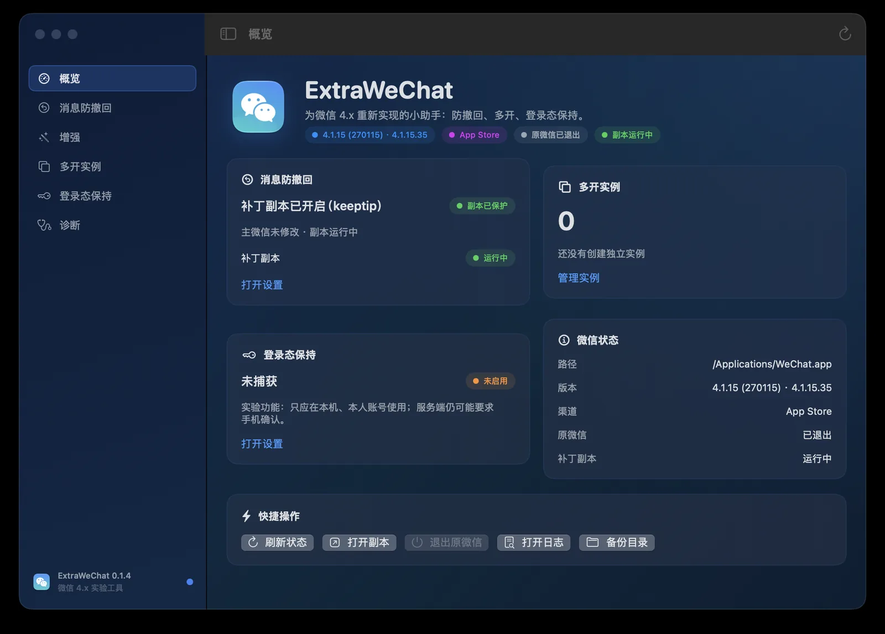
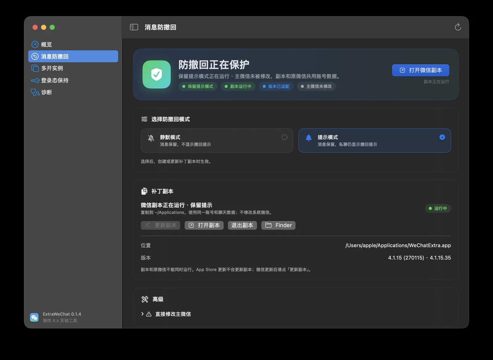
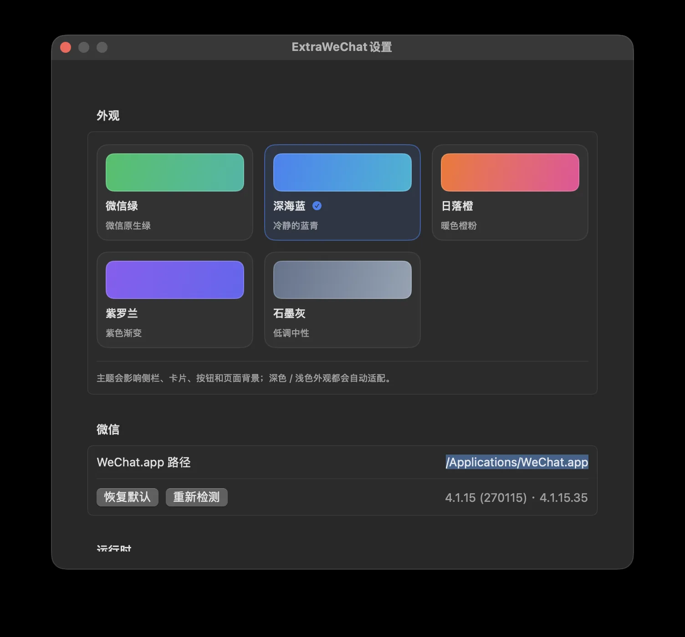
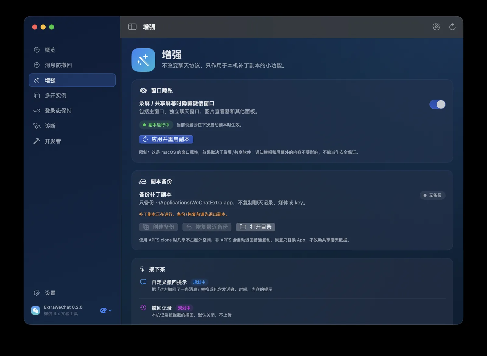

防撤回
别人撤回后，原消息继续留在聊天里。支持静默模式和保留提示模式，切换约 1 秒。
silent / keeptipExtraWeChat 是微信 4.x 的本地增强工具。防撤回、补丁副本、多开、窗口隐私和自定义主题， 全部在你自己机器上完成。原始微信不动，聊天内容不上传。

不做机器人，不碰服务端协议。只在你自己的 Mac 和补丁副本里工作。
别人撤回后，原消息继续留在聊天里。支持静默模式和保留提示模式，切换约 1 秒。
silent / keeptip复制到 ~/Applications 后打补丁。不修改系统微信，不需要 root 或 App 管理权限；支持一键备份/恢复。
每个实例使用独立 bundle ID 和数据目录，可以和原微信并存，单独登录。
独立数据录屏或共享屏幕时隐藏微信窗口，包括主窗口、聊天窗口和图片查看器。
runtime dylib内置 42 个微信 4.x 构建；适配表可远程更新，未收录的构建还能用几何签名自动定位。
4.1.10 → 4.1.15.555 套主题跟随侧栏、卡片和背景；菜单栏快速启动、打开或退出副本。
微信绿 / 深海蓝 / 日落橙 …主微信保持原样。ExtraWeChat 在用户目录创建一份补丁副本， 重签后启动。账号和聊天数据与原微信共用同一份容器，所以不需要重新登录。
了解运行时组件⌘Q 并等待 helper 退出。副本与原微信不能同时运行。
选择静默或保留提示，ExtraWeChat 复制、打补丁并重签。
从副本登录同一账号，聊天记录还在；需要时从备份恢复 App，微信更新后一键重建。
深色界面、彩色主题、状态一目了然。



每个补丁点写入前都会校验原始字节。构建号不匹配就拒绝，不会盲写。
268575 · 268596 · 268597 · 268599 · 268601 · 268602 · 268831 · 268849 · 268850 · 268851 · 269077 · 269079 · 269110 · 269111 · 269136
268880 仅 silent269332 · 269333 · 269334 · 269338 · 269340 · 269341
delta 0x7a0269574 – 269579 · 269619 · 269624 · 269626 – 269628 · 269631 · 270090 · 270100 · 270102 · 270115（实测） · 270132 · 270134 · 270135
42 个构建中的主流路径269602 使用分类函数桩；未收录的同代构建使用 3 代 arm64 几何签名自动定位。
命中多处会拒绝猜测默认只修改 ~/Applications/WeChatExtra.app。原 /Applications/WeChat.app 保持原样。
没有内核扩展，不关闭 SIP，不上传聊天内容，不需要账号系统。
修改客户端违反腾讯用户协议。不要在主号上反复测试，也不要分发打补丁后的微信 App。
ExtraWeChat 与腾讯无关，不是微信官方产品。使用前请自行备份重要数据，并阅读仓库中的风险说明。
不能保证不封。防撤回、多开和窗口隐私都只改本地客户端，但修改微信违反腾讯用户协议，存在账号风险。建议先在小号或次要账号上验证，不要在主力账号上反复测试。
macOS 的「App 管理」TCC 会拦截对系统应用的修改，即使使用 root 也不一定成功。补丁副本在用户目录，不需要 root 或 App 管理权限，也不需要关闭 SIP。
不能。两者共用同一个 bundle ID 和沙盒容器，同时运行会冲突。启动副本前请完全退出原微信。
打开 ExtraWeChat →「消息防撤回」。如果检测到主微信构建号变化，会提示副本需要更新；点「更新并启动」重建即可，聊天记录不会丢失。重建前也可以先在「增强 → 副本备份」留一份 App 备份。
不会。副本备份只复制 ~/Applications/WeChatExtra.app，不包含聊天数据、媒体或登录 key。恢复也只替换 App，不动共享的微信数据容器。
目前只支持 Apple Silicon（arm64），macOS 13 及以上。微信 4.x 内置 42 个构建，覆盖 4.1.10 到 4.1.15.55；未收录的同代构建可自动定位。Intel、微信 3.8.x 和 4.1.7 不支持。
不会。窗口隐私在微信进程内完成；补丁和签名都在本机执行，没有账号系统和遥测。登录态保持仍是实验功能，不保证服务端接受。
没有。自动领红包涉及资金自动化，账号和维护风险都高，不放进默认发布计划。自定义撤回提示、撤回记录和关键词提醒仍在规划中。
下载 pkg，退出微信，创建补丁副本。三步之后，原消息不会再消失。